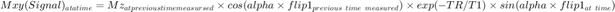
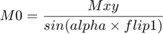

Determining Enhancement and Polarisation from DNP
Contents
- Inputs
- Outputs
- Child Functions
- Calling the User if Insufficient or Invalid Inputs
- Calculating Polarisation at Thermal Equilibrium
- Calculating the Angle Adjustment Factor and Hyperpolarisation Signal
- Determining the Flip Angle Used at the First Measured Point in the Hyperpolarised Dissolution Experiment
- Determining the Number of Averages in the Thermal Equilibrium Experiment
- Determining the Flip Angle Used in the Thermal Equilibrium Experiment
- Determining the Noise in Both Experiments
- Calculating the Enhancement Factor and Polarisation of Each Measured Peak
- Notes
findpol calculates the enhancement factor and polarisation of a compound using dissolution data and thermal equilibrium data. From the magnetic field, element and temperature, the polarisation at thermal equilibrium is also calcualted
Inputs
B0: is the magnetic field strength of the magnet where the experiments were done in Tesla
atom: is the abbreviation of the element detected in the magnet. See findgyro for a list of supported elements
tempc: is the temperature the experiments were conducted in Celsius
inph: is 'A' if the data from the hyperpolarsied dissolution experiment was quantified using AMARES from JMRUI, or it is 'M' if the data was quantified using integration from MestReNova
dath: is either a cell containing the .txt AMARES exports for the data from the hyperpolarised dissolution experiment in each element, or it is a character vector of the .csv integral custom output from MestReNova
procparh: is the procpar file for the hyperpolarised dissolution experiment
inpt: is 'A' if the data from the thermal equilibrium experiment was quantified using AMARES from JMRUI, or it is 'M' if the data was quantified using integration from MestReNova
datt: is either a cell containing the .txt AMARES exports for the data from the thermal equilibrium experiment in each element, or it is a character vector of the .csv integral custom output from MestReNova
procpart: is the procpar file for the thermal equilibrium experiment
FIDs: is a cell containing the .txt outputs from the Mrui output from JMRUI. Each element contains the FID data of the hyperpolarised data and the thermal equilibrium data respectively.
coilnumh: should be left blank or equal to [] unless inph is set to 'M'. If inph is set to 'M', coilnumh is the number of coils used to collect the data for the hyperpolarised experiemnt
fieldh: should be left blank or equal to [] unless inph is set to 'M'. If inph is set to 'M', fieldh is a cell containing the names of each peak quantified in each element
coilnumt: should be left blank or equal to [] unless inpt is set to 'M'. If inph is set to 'M', coilnumt is the number of coils used to collect the data for the thermal equilibrium experiment
fieldt: should be left blank or equal to [] unless inpt is set to 'M'. If fieldt is set to 'M', fieldt is a cell containing the names of each peak quantified in each element
Outputs
enhance: is an array containing the enhancement factors for each peak
pol: is an array containing the polarisation of each peak at the first measurement in the hyperpolarised dissolution experiment
poltherm: is the polarisation of the compound at thermal equilibrium
Child Functions
isnumber: checks if an input is a number
findgyro: finds the gyromagnetic ratio from the inputted element abbreviation
findThermalEqPol: calculates the polarisation of the sample at thermoequilibrium given the magnetic field strength, gyromagnetic ratio and temperature
T1DecayCalc: calculates the flip angle correction factor to be applied to the hyperpolarised and thermal equilibrium data to transform the signal data to their respective M0s
alphaparse: parses data collected from the 300MHz magnet to readible arrays
flipAnglesFromProcpar: finds what is stored in the flip1 parameter of an inputted procpar file to find the estimated flip angles used
readprocpar: parses an inputted procpar file into a structure array
findNoise: finds the noise from a .txt mRUI output file from JMRUI to calculate the SNR. The noise is assumed to be the standard deviation of the last eighth of the points collected from the time domain
function [enhance,pol,poltherm] = findpol(B0,atom,tempc,inph,dath,procparh,inpt,datt,procpart,FIDs,coilnumh,fieldh,coilnumt,fieldt)
Calling the User if Insufficient or Invalid Inputs
The magnetisation B0, must be a number. atom must be a character vector, where the gyromagnetic ratio is stored in findgyro. tempc, the temperature the experiments are done at must a number, like B0.
magbool = 0;
tempcbool = 0;
if nargin > 0
magbool = isnumber(B0);
end
while magbool == 0
try
B0 = input('Enter the magnetic field strength in Tesla the experiment was conducted in: ');
catch
disp('Error: Magnetic field strength must be a number')
end
magbool = isnumber(B0);
end
if nargin > 1
gyro = findgyro(atom);
else
gyro = findgyro;
end
if nargin > 2
tempcbool = isnumber(tempc);
end
while tempcbool == 0
try
tempc = input('Enter the temperature in Celsius the experiment was conducted in: ');
catch
disp('Error: Temperature must be a number')
end
tempcbool = isnumber(tempc);
end
Calculating Polarisation at Thermal Equilibrium
poltherm = findThermalEqPol(B0,gyro,tempc);
Calculating the Angle Adjustment Factor and Hyperpolarisation Signal
When flip1 is arrayed, the angles arrayed are an estimate of the used flip angle from varying power. In a dissolution experiment where the flip angles are varied, the data can be described by the following relation:

T1DecayCalc calculates the parameters: M0 (Mz at time = 0), alpha and T1. The variable alpha is the angles adjustment factor that is used to adjustment the proposed flip angles in flip1 to the actual flip angles used.
if nargin >= 12 [~,~,alpha] = T1DecayCalc(procparh,inph,dath,coilnumh,fieldh); [~,hypersig] = alphaparse([],inph,'N',dath,coilnum,field,procparh); elseif nargin >= 11 [~,~,alpha] = T1DecayCalc(procparh,inph,dath,coilnumh); [~,hypersig] = alphaparse([],inph,'N',dath,coilnum,[],procparh); elseif nargin >= 6 [~,~,alpha] = T1DecayCalc(procparh,inph,dath); [~,hypersig] = alphaparse([],inph,'N',dath,[],[],procparh); elseif nargin >= 5 [~,~,alpha] = T1DecayCalc([],inph,dath); [~,hypersig] = alphaparse([],inph,'N',dath); elseif nargin >= 4 [~,~,alpha] = T1DecayCalc([],inph); [~,hypersig] = alphaparse([],inph,'N'); else [~,~,alpha] = T1DecayCalc; [~,hypersig] = alphaparse([],[],'N'); end
Local minimum possible. lsqcurvefit stopped because the final change in the sum of squares relative to its initial value is less than the value of the function tolerance.
Determining the Flip Angle Used at the First Measured Point in the Hyperpolarised Dissolution Experiment
if nargin >= 6 flips = flipAnglesFromProcpar(procparh); fliph = flips(1); else flips = flipAnglesFromProcpar; fliph = flips(1); end
Determining the Number of Averages in the Thermal Equilibrium Experiment
if nargin >= 14 [~,thermalsig] = alphaparse([],inpt,'N',datt,coilnumt,fieldt,procpart); numavs = readprocpar(procpart).ct; elseif nargin >= 13 [~,thermalsig] = alphaparse([],inpt,'N',datt,coilnumt,[],procpart); numavs = readprocpar(procpart).ct; elseif nargin >= 9 [~,thermalsig] = alphaparse([],inpt,'N',datt,[],[],procpart); numavs = readprocpar(procpart).ct; elseif nargin >= 8 procpart = readprocpar; [~,thermalsig] = alphaparse([],inpt,'N',datt,[],[],procpart); numavs = readprocpar(procpart).ct; elseif nargin >= 7 procpart = readprocpar; [~,thermalsig] = alphaparse([],inpt,'N',[],[],[],procpart); numavs = readprocpar(procpart).ct; else procpart = readprocpar; [~,thermalsig] = alphaparse([],[],'N',[],[],[],procpart); numavs = readprocpar(procpart).ct; end numpeak = length(thermalsig); enhance = zeros(numpeak,1);
Determining the Flip Angle Used in the Thermal Equilibrium Experiment
thermalflip = flipAnglesFromProcpar(procpart);
Determining the Noise in Both Experiments
The standard deviation of the last eighth of the points in the FIDs are found for both the real and imaginary parts in both the hyperpolarised and thermal data. The outputted noise is the average of these two components for each.
if nargin >= 10 noise = findNoise(FIDs); avNoiseh = noise(1); avNoiset = noise(2); else disp('When prompted, enter the .txt file containing the FID data from the hyperpolarised data first then, the thermal equilibrium data') noise = findNoise; avNoiseh = noise(1); avNoiset = noise(2); end
Calculating the Enhancement Factor and Polarisation of Each Measured Peak
The enhancement factor, enhance is defined as the ratio of the achieved Signal to Noise Ratios (SNR) from the hyperpolarised dissolution experiment to the thermal equilibrium experiment. However, before the SNR ratios can be taken, the data must be transformed so the two experiments are comparable. Signal in NMR is Mxy, to compare the SNR, the Mxy_s from both experiments are transformed to _M0 using  Then, the SNR ratios are calculated. However, the thermal equilibrium SNR ratio has to be adjusted by dividing by the squareroot of the number of averages used to calculate the thermal data, since the noise scales by the squareroot of the number of averages. Polarisation is calculated by multiplying the enhancement by the polarisation at thermal equilibrium
for el = 1:numpeak hflipfaca = sind(alpha(el)*fliph); hflipfac = 1/hflipfaca; hsigad = hypersig(1,el)*hflipfac; tflipfaca = sind(alpha(el)*thermalflip); tflipfac = 1/tflipfaca; tsigad = thermalsig(el)*tflipfac; SNRh = hsigad/avNoiseh; SNRt = tsigad/avNoiset; SNRtad = SNRt/(sqrt(numavs)); enhance(el) = SNRh/SNRtad; end pol = poltherm.*enhance;
end
enhance =
3.1525e+04
pol =
0.1927
poltherm =
6.1135e-06
Notes
The inputs used in the example were:
B0: 7
atom: 'C'
tempc: 21
inph: 'A'
dath: {'Decay_Dissolution_1Pyr_A_10_12_19.txt'}
_procparh: 'procpar10_12_19_Dissolution_1Pyr'
_inpt: 'A'
datt: {'Thermal_1Pyr_A_11_12_19.txt'}
procpart: 'procpar11_12_19_Thermal_1Pyr'
FIDs: {'Decay_DissolutionFID_1Pyr_10_12_19.txt','ThermalFID_1Pyr_11_12_19.txt'}
The example was run by putting:
[enhance,pol,poltherm] = findpol(7,'C',21,'A', {'Decay_Dissolution_1Pyr_A_10_12_19.txt'}, 'procpar10_12_19_Dissolution_1Pyr','A',{'Thermal_1Pyr_A_11_12_19.txt'}, 'procpar11_12_19_Thermal_1Pyr',{'Decay_DissolutionFID_1Pyr_10_12_19.txt', 'ThermalFID_1Pyr_11_12_19.txt'})
into the command window